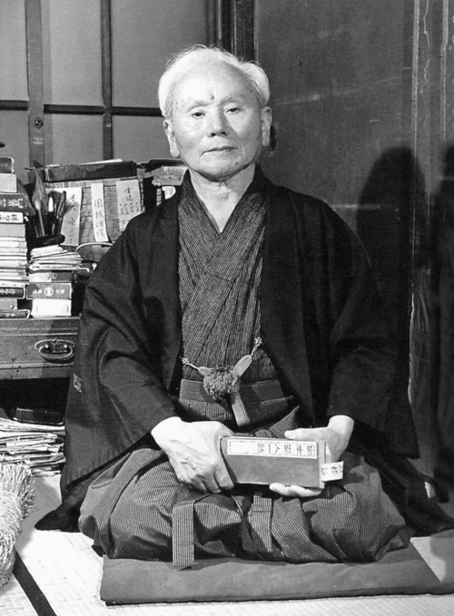
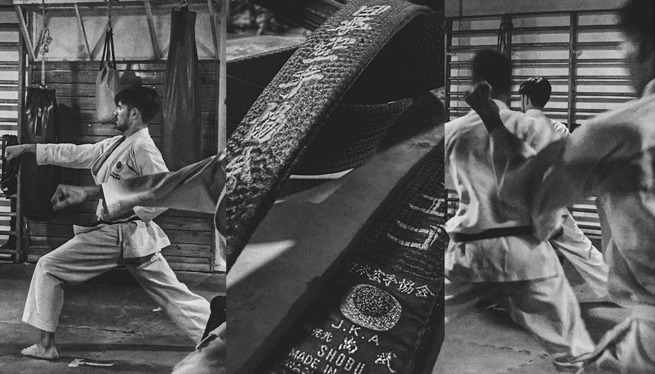

¿Cómo empezó karate?
El karate se originó en Okinawa, Japón, durante el período Ryukyu (siglos XV al XIX). Surgió como un método de autodefensa debido a las prohibiciones de armas impuestas por los gobernantes japoneses. En el siglo XX, el maestro Gichin Funakoshi introdujo el karate en Japón, fundando la escuela Shotokan, lo que impulsó su expansión global. A lo largo del tiempo, el karate evolucionó en diferentes estilos y se convirtió en una práctica popular a nivel mundial, valorada por su impacto en el desarrollo físico, mental y espiritual de los practicantes.
Los inicios del Dojo Bushido
El Dojo Bushido dio sus inicios en el año 1995, ubicado en el fondo de un gimnasio como una actividad secundaria.Al poco tiempo decidieron trastalarse a un salon más amplio en un salon ubicado en un primer piso de una estacion de servicio.
Tras mucho sacrificio y trabajo, en el año 2004 el dojo Bushido abrio sus puertas en la calle Alsina 1398.